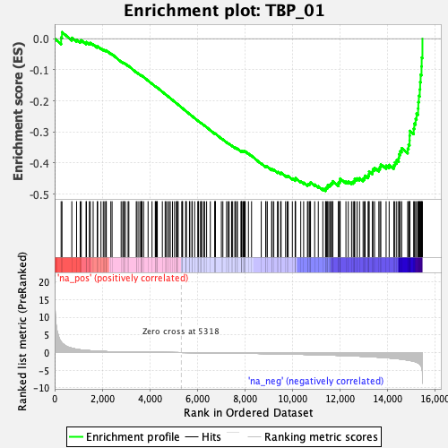

| | | Dataset | DE_genes |
| Phenotype | NoPhenotypeAvailable |
| Upregulated in class | na_neg |
| GeneSet | TBP_01 |
| Enrichment Score (ES) | -0.49028364 |
| Normalized Enrichment Score (NES) | -1.5979475 |
| Nominal p-value | 0.0 |
| FDR q-value | 0.18028449 |
| FWER p-Value | 0.907 |
Table: GSEA Results Summary

Fig 1: Enrichment plot: TBP_01
Profile of the Running ES Score & Positions of GeneSet Members on the Rank Ordered List
| PROBE | GENE SYMBOL | GENE_TITLE | RANK IN GENE LIST | RANK METRIC SCORE | RUNNING ES | CORE ENRICHMENT | | 1 | SH3BGRL3 | | | 272 | 3.047 | 0.0040 | No |
| 2 | EPHA7 | | | 309 | 2.709 | 0.0210 | No |
| 3 | SUPT4H1 | | | 722 | 1.239 | 0.0030 | No |
| 4 | EMC6 | | | 923 | 0.953 | -0.0033 | No |
| 5 | ZFP36L1 | | | 1074 | 0.777 | -0.0076 | No |
| 6 | ITGB3BP | | | 1119 | 0.743 | -0.0051 | No |
| 7 | BRAF | | | 1321 | 0.604 | -0.0140 | No |
| 8 | SOX9 | | | 1338 | 0.594 | -0.0107 | No |
| 9 | SEMA4B | | | 1460 | 0.538 | -0.0148 | No |
| 10 | NME5 | | | 1499 | 0.518 | -0.0136 | No |
| 11 | TNFRSF17 | | | 1620 | 0.465 | -0.0181 | No |
| 12 | GALNT1 | | | 1791 | 0.395 | -0.0264 | No |
| 13 | OGFOD1 | | | 1810 | 0.387 | -0.0248 | No |
| 14 | PPP2R2A | | | 1948 | 0.343 | -0.0313 | No |
| 15 | S100A4 | | | 2046 | 0.313 | -0.0354 | No |
| 16 | COL1A2 | | | 2108 | 0.295 | -0.0373 | No |
| 17 | HDAC9 | | | 2158 | 0.280 | -0.0385 | No |
| 18 | ADAM11 | | | 2173 | 0.274 | -0.0375 | No |
| 19 | PLAGL2 | | | 2362 | 0.229 | -0.0481 | No |
| 20 | SECISBP2L | | | 2416 | 0.223 | -0.0500 | No |
| 21 | SLC26A9 | | | 2797 | 0.162 | -0.0737 | No |
| 22 | TAX1BP3 | | | 2865 | 0.153 | -0.0770 | No |
| 23 | ATXN7L1 | | | 2913 | 0.148 | -0.0790 | No |
| 24 | SLC2A4 | | | 2917 | 0.148 | -0.0782 | No |
| 25 | IGF1 | | | 2978 | 0.142 | -0.0811 | No |
| 26 | SCHIP1 | | | 3089 | 0.132 | -0.0873 | No |
| 27 | HOXC6 | | | 3121 | 0.128 | -0.0884 | No |
| 28 | ASB4 | | | 3433 | 0.105 | -0.1080 | No |
| 29 | RAB5B | | | 3466 | 0.101 | -0.1094 | No |
| 30 | ABCC6 | | | 3541 | 0.096 | -0.1136 | No |
| 31 | KBTBD12 | | | 3620 | 0.091 | -0.1180 | No |
| 32 | FGF5 | | | 3627 | 0.091 | -0.1177 | No |
| 33 | AMPD1 | | | 3660 | 0.089 | -0.1192 | No |
| 34 | ANGPT4 | | | 3672 | 0.088 | -0.1193 | No |
| 35 | TSPEAR | | | 3742 | 0.085 | -0.1232 | No |
| 36 | ASB5 | | | 3930 | 0.074 | -0.1349 | No |
| 37 | DIRAS1 | | | 4096 | 0.064 | -0.1452 | No |
| 38 | HNF1A | | | 4233 | 0.057 | -0.1537 | No |
| 39 | SERPINB13 | | | 4243 | 0.056 | -0.1539 | No |
| 40 | PAK6 | | | 4277 | 0.054 | -0.1557 | No |
| 41 | NOS1AP | | | 4308 | 0.053 | -0.1573 | No |
| 42 | WWC2-AS2 | | | 4318 | 0.052 | -0.1575 | No |
| 43 | ACYP2 | | | 4530 | 0.040 | -0.1710 | No |
| 44 | NRN1L | | | 4648 | 0.034 | -0.1784 | No |
| 45 | CPNE1 | | | 4677 | 0.033 | -0.1800 | No |
| 46 | ANKRD23 | | | 4742 | 0.029 | -0.1840 | No |
| 47 | IGSF9B | | | 4811 | 0.025 | -0.1883 | No |
| 48 | ART3 | | | 4864 | 0.023 | -0.1915 | No |
| 49 | ANKS1B | | | 4956 | 0.019 | -0.1973 | No |
| 50 | RASGRP3 | | | 5043 | 0.013 | -0.2029 | No |
| 51 | ESRRG | | | 5120 | 0.010 | -0.2078 | No |
| 52 | XK | | | 5152 | 0.009 | -0.2097 | No |
| 53 | TRDN | | | 5153 | 0.009 | -0.2097 | No |
| 54 | LINC00670 | | | 5197 | 0.006 | -0.2124 | No |
| 55 | CELF4 | | | 5346 | -0.002 | -0.2221 | No |
| 56 | KPNA3 | | | 5372 | -0.003 | -0.2237 | No |
| 57 | HOXB5 | | | 5383 | -0.003 | -0.2244 | No |
| 58 | HOXC4 | | | 5511 | -0.010 | -0.2326 | No |
| 59 | B3GALT6 | | | 5530 | -0.011 | -0.2337 | No |
| 60 | BEX2 | | | 5537 | -0.011 | -0.2340 | No |
| 61 | PANK1 | | | 5670 | -0.019 | -0.2425 | No |
| 62 | KRT222 | | | 5686 | -0.020 | -0.2434 | No |
| 63 | KAT7 | | | 5777 | -0.025 | -0.2491 | No |
| 64 | CUL3 | | | 5781 | -0.025 | -0.2491 | No |
| 65 | IGSF21 | | | 5888 | -0.031 | -0.2558 | No |
| 66 | ART5 | | | 6022 | -0.040 | -0.2642 | No |
| 67 | COL10A1 | | | 6041 | -0.042 | -0.2651 | No |
| 68 | P2RX5 | | | 6054 | -0.043 | -0.2656 | No |
| 69 | NOS2 | | | 6136 | -0.049 | -0.2705 | No |
| 70 | SKIDA1 | | | 6172 | -0.051 | -0.2725 | No |
| 71 | MEOX2 | | | 6180 | -0.051 | -0.2725 | No |
| 72 | GABRB2 | | | 6267 | -0.057 | -0.2778 | No |
| 73 | GRIK4 | | | 6307 | -0.059 | -0.2799 | No |
| 74 | ACTA1 | | | 6392 | -0.065 | -0.2849 | No |
| 75 | RARA | | | 6548 | -0.075 | -0.2945 | No |
| 76 | STAC | | | 6739 | -0.090 | -0.3063 | No |
| 77 | COL13A1 | | | 6743 | -0.091 | -0.3059 | No |
| 78 | AOC2 | | | 6750 | -0.091 | -0.3056 | No |
| 79 | NOG | | | 6759 | -0.092 | -0.3055 | No |
| 80 | RIT1 | | | 7013 | -0.112 | -0.3212 | No |
| 81 | CLDN23 | | | 7076 | -0.117 | -0.3244 | No |
| 82 | MYOCD | | | 7231 | -0.129 | -0.3336 | No |
| 83 | SLC35F5 | | | 7297 | -0.136 | -0.3369 | No |
| 84 | CFL2 | | | 7343 | -0.140 | -0.3388 | No |
| 85 | PNMA1 | | | 7445 | -0.148 | -0.3444 | No |
| 86 | PPARGC1A | | | 7487 | -0.151 | -0.3460 | No |
| 87 | ZNF436 | | | 7583 | -0.160 | -0.3510 | No |
| 88 | TMEM117 | | | 7591 | -0.161 | -0.3504 | No |
| 89 | TLK1 | | | 7656 | -0.167 | -0.3534 | No |
| 90 | PRKAG1 | | | 7689 | -0.170 | -0.3542 | No |
| 91 | SOX5 | | | 7844 | -0.183 | -0.3630 | No |
| 92 | HSPB3 | | | 7846 | -0.184 | -0.3617 | No |
| 93 | TUBA4B | | | 7863 | -0.185 | -0.3615 | No |
| 94 | SRSF3 | | | 7876 | -0.186 | -0.3609 | No |
| 95 | CHRDL1 | | | 7930 | -0.192 | -0.3630 | No |
| 96 | NNT | | | 7959 | -0.194 | -0.3635 | No |
| 97 | RILP | | | 7967 | -0.195 | -0.3625 | No |
| 98 | RHOBTB1 | | | 8006 | -0.199 | -0.3636 | No |
| 99 | DLG2 | | | 8016 | -0.200 | -0.3627 | No |
| 100 | LGALSL | | | 8152 | -0.214 | -0.3700 | No |
| 101 | EHD1 | | | 8283 | -0.228 | -0.3769 | No |
| 102 | TMEM86B | | | 8691 | -0.273 | -0.4016 | No |
| 103 | CDC42EP3 | | | 8878 | -0.295 | -0.4116 | No |
| 104 | POFUT1 | | | 8888 | -0.296 | -0.4101 | No |
| 105 | NCOR1 | | | 8946 | -0.304 | -0.4117 | No |
| 106 | DNAJA4 | | | 9127 | -0.326 | -0.4211 | No |
| 107 | TSPAN13 | | | 9149 | -0.329 | -0.4201 | No |
| 108 | THBS2 | | | 9218 | -0.337 | -0.4222 | No |
| 109 | NANOS1 | | | 9374 | -0.355 | -0.4298 | No |
| 110 | CSDE1 | | | 9401 | -0.359 | -0.4289 | No |
| 111 | ELMO1 | | | 9503 | -0.374 | -0.4328 | No |
| 112 | SLC30A1 | | | 9526 | -0.377 | -0.4316 | No |
| 113 | CHMP1B | | | 9714 | -0.406 | -0.4409 | No |
| 114 | FHL2 | | | 9779 | -0.414 | -0.4421 | No |
| 115 | NR0B2 | | | 9824 | -0.421 | -0.4420 | No |
| 116 | TMEM178A | | | 9999 | -0.447 | -0.4502 | No |
| 117 | BICD1 | | | 10116 | -0.464 | -0.4545 | No |
| 118 | NTF3 | | | 10122 | -0.465 | -0.4515 | No |
| 119 | DMD | | | 10135 | -0.468 | -0.4489 | No |
| 120 | CSNK1E | | | 10352 | -0.499 | -0.4595 | No |
| 121 | PRKAA2 | | | 10474 | -0.515 | -0.4637 | No |
| 122 | HOXB4 | | | 10633 | -0.543 | -0.4701 | No |
| 123 | SH3GLB2 | | | 10661 | -0.547 | -0.4680 | No |
| 124 | ATXN1 | | | 10716 | -0.555 | -0.4675 | No |
| 125 | CCL23 | | | 10746 | -0.560 | -0.4654 | No |
| 126 | GPBP1L1 | | | 10764 | -0.563 | -0.4625 | No |
| 127 | PATZ1 | | | 10937 | -0.588 | -0.4696 | No |
| 128 | DNM2 | | | 11090 | -0.613 | -0.4751 | No |
| 129 | CPEB4 | | | 11281 | -0.653 | -0.4829 | No |
| 130 | KLHDC8B | | | 11395 | -0.677 | -0.4854 | Yes |
| 131 | TPM2 | | | 11407 | -0.680 | -0.4813 | Yes |
| 132 | CYP26B1 | | | 11442 | -0.686 | -0.4786 | Yes |
| 133 | SYTL2 | | | 11490 | -0.697 | -0.4767 | Yes |
| 134 | FBXW11 | | | 11491 | -0.697 | -0.4717 | Yes |
| 135 | GPR153 | | | 11566 | -0.712 | -0.4714 | Yes |
| 136 | RPS19 | | | 11606 | -0.721 | -0.4688 | Yes |
| 137 | CTNNAL1 | | | 11638 | -0.731 | -0.4656 | Yes |
| 138 | HBEGF | | | 11688 | -0.740 | -0.4635 | Yes |
| 139 | PLEC | | | 11697 | -0.741 | -0.4587 | Yes |
| 140 | SSH3 | | | 11936 | -0.792 | -0.4686 | Yes |
| 141 | HRC | | | 11942 | -0.793 | -0.4633 | Yes |
| 142 | ZC3H10 | | | 11988 | -0.802 | -0.4605 | Yes |
| 143 | FAM78A | | | 12004 | -0.806 | -0.4557 | Yes |
| 144 | BNC2 | | | 12010 | -0.807 | -0.4503 | Yes |
| 145 | FXYD1 | | | 12253 | -0.865 | -0.4599 | Yes |
| 146 | MGAT3 | | | 12352 | -0.890 | -0.4599 | Yes |
| 147 | AMDHD2 | | | 12489 | -0.925 | -0.4622 | Yes |
| 148 | GDPD3 | | | 12560 | -0.943 | -0.4601 | Yes |
| 149 | FZD8 | | | 12610 | -0.955 | -0.4564 | Yes |
| 150 | TTC17 | | | 12625 | -0.960 | -0.4505 | Yes |
| 151 | SPTB | | | 12721 | -0.987 | -0.4496 | Yes |
| 152 | FLI1 | | | 12825 | -1.019 | -0.4491 | Yes |
| 153 | DMPK | | | 12974 | -1.068 | -0.4511 | Yes |
| 154 | AGT | | | 13030 | -1.084 | -0.4469 | Yes |
| 155 | TSC22D1 | | | 13060 | -1.094 | -0.4410 | Yes |
| 156 | ITGA7 | | | 13184 | -1.132 | -0.4409 | Yes |
| 157 | TRPM4 | | | 13221 | -1.146 | -0.4351 | Yes |
| 158 | SLC35C2 | | | 13226 | -1.147 | -0.4271 | Yes |
| 159 | MAP2K5 | | | 13367 | -1.202 | -0.4277 | Yes |
| 160 | PMEPA1 | | | 13386 | -1.207 | -0.4202 | Yes |
| 161 | LUC7L | | | 13455 | -1.236 | -0.4158 | Yes |
| 162 | TECR | | | 13636 | -1.305 | -0.4183 | Yes |
| 163 | ZKSCAN5 | | | 13684 | -1.322 | -0.4119 | Yes |
| 164 | DES | | | 13721 | -1.342 | -0.4046 | Yes |
| 165 | GIT1 | | | 13943 | -1.440 | -0.4088 | Yes |
| 166 | RCOR1 | | | 14071 | -1.514 | -0.4063 | Yes |
| 167 | DYRK2 | | | 14268 | -1.645 | -0.4073 | Yes |
| 168 | PACSIN3 | | | 14311 | -1.666 | -0.3981 | Yes |
| 169 | TEF | | | 14389 | -1.712 | -0.3909 | Yes |
| 170 | USP47 | | | 14474 | -1.769 | -0.3838 | Yes |
| 171 | ABR | | | 14486 | -1.777 | -0.3718 | Yes |
| 172 | FOXN3 | | | 14539 | -1.820 | -0.3621 | Yes |
| 173 | EGR2 | | | 14597 | -1.869 | -0.3525 | Yes |
| 174 | MSC | | | 14852 | -2.107 | -0.3540 | Yes |
| 175 | KCTD15 | | | 14887 | -2.145 | -0.3409 | Yes |
| 176 | HDAC7 | | | 14929 | -2.199 | -0.3278 | Yes |
| 177 | TMEM88 | | | 14932 | -2.203 | -0.3122 | Yes |
| 178 | TSC1 | | | 14940 | -2.219 | -0.2968 | Yes |
| 179 | WIPI1 | | | 15103 | -2.475 | -0.2896 | Yes |
| 180 | MEIS1 | | | 15128 | -2.505 | -0.2733 | Yes |
| 181 | CTCF | | | 15185 | -2.619 | -0.2582 | Yes |
| 182 | ABLIM1 | | | 15224 | -2.723 | -0.2412 | Yes |
| 183 | MAT2A | | | 15289 | -2.885 | -0.2247 | Yes |
| 184 | CKB | | | 15298 | -2.933 | -0.2042 | Yes |
| 185 | AQP1 | | | 15320 | -3.041 | -0.1838 | Yes |
| 186 | NDRG2 | | | 15358 | -3.232 | -0.1631 | Yes |
| 187 | SLC25A4 | | | 15374 | -3.387 | -0.1398 | Yes |
| 188 | NR4A1 | | | 15395 | -3.552 | -0.1157 | Yes |
| 189 | TUBA4A | | | 15432 | -3.985 | -0.0896 | Yes |
| 190 | C12orf57 | | | 15439 | -4.076 | -0.0608 | Yes |
| 191 | FOS | | | 15471 | -8.771 | -0.0000 | Yes |
Table: GSEA details [plain text format]
Fig 2: TBP_01: Random ES distribution
Gene set null distribution of ES for TBP_01